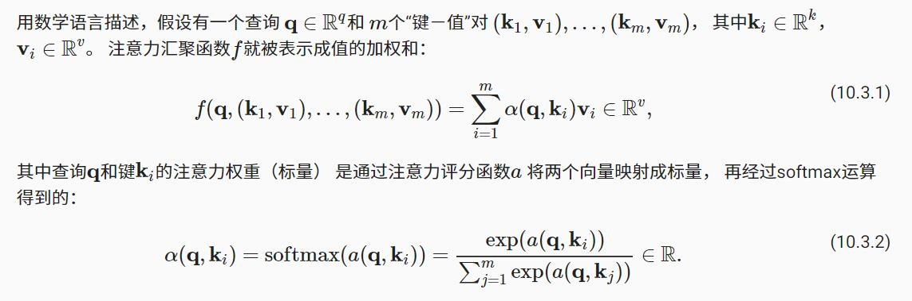

10. 注意力机制
——————————————————————————————————
之前我一直在想，注意力机制无非是在模型中添加了几个中间层，可能是池化层，卷积层，等等，然后利用数据驱使模型梯度下降，从而被迫学习注意力能力。这样的话，带有注意力机制的模型在学习收敛之后，注意力模块已经嵌入到模型当中，或者说，注意力模块其实是模型的一部分，只是复杂化了模型而已。
但是，但是这样想，等模型收敛之后，把训练好的注意力模块单独拿出来，然后输入图像之后，注意力模块能够输出需要注意的重点部分，（类似于词向量，训练好了之后单独拿出来用）这样一想，似乎更通畅，即，借助特定任务，学习得到注意力模块，该模块能够截取出来单独用。
——————————————————————————————————
10.1. 注意力提示
自经济学研究稀缺资源分配以来，我们正处在“注意力经济”时代， 即人类的注意力被视为可以交换的、有限的、有价值的且稀缺的商品。 许多商业模式也被开发出来去利用这一点： 在音乐或视频流媒体服务上，我们要么消耗注意力在广告上，要么付钱来隐藏广告； 为了在网络游戏世界的成长，我们要么消耗注意力在游戏战斗中， 从而帮助吸引新的玩家，要么付钱立即变得强大。 总之，注意力不是免费的。
10.1.1. 生物学中的注意力提示
双组件（two-component）的框架 : 基于非自主性提示和自主性提示 。
非自主性提示是基于环境中物体的突出性和易见性。
自主性提示 是受到了认知和意识的控制，因此注意力在基于自主性提示去辅助选择时将更为谨慎。 受主观意愿推动，选择的力量也就更强大。
10.1.2. 查询、键和值（这一段没怎么懂，看完具体模型再回来看这一段）
自主性的与非自主性的注意力提示解释了人类的注意力的方式， 下面我们看看如何通过这两种注意力提示， 用神经网络来设计注意力机制的框架。
首先，考虑一个相对简单的状况， 即只使用非自主性提示。 要想将选择偏向于感官输入， 我们可以简单地使用参数化的全连接层， 甚至是非参数化的最大汇聚层或平均汇聚层。
因此，“是否包含自主性提示”将注意力机制与全连接层或汇聚层区别开来。 在注意力机制的背景下，我们将自主性提示称为查询（query）。 给定任何查询，注意力机制通过注意力汇聚（attention pooling） 将选择引导至感官输入（sensory inputs，例如中间特征表示）。 在注意力机制中，这些感官输入被称为值（value）。 更通俗的解释，每个值都与一个键（key）配对， 这可以想象为感官输入的非自主提示。 如 图10.1.3所示，我们可以设计注意力汇聚， 以便给定的查询（自主性提示）可以与键（非自主性提示）进行匹配， 这将引导得出最匹配的值（感官输入）。
10.1.4. 小结
- 人类的注意力是有限的、有价值和稀缺的资源。
- 受试者使用非自主性和自主性提示有选择性地引导注意力。前者基于突出性，后者则依赖于意识。
- 注意力机制与全连接层或者汇聚层的区别源于增加的自主提示。
- 由于包含了自主性提示，注意力机制与全连接的层或汇聚层不同。
- 注意力机制通过注意力汇聚使选择偏向于值（感官输入），其中包含查询（自主性提示）和键（非自主性提示）。键和值是成对的。
- 我们可以可视化查询和键之间的注意力权重。
10.2. 注意力汇聚：Nadaraya-Watson 核回归
上节我们介绍了框架下的注意力机制的主要成分 图10.1.3： 查询（自主提示）和键（非自主提示）之间的交互形成了注意力汇聚， 注意力汇聚有选择地聚合了值（感官输入）以生成最终的输出。
10.2.1. 生成数据集
10.2.3. 非参数注意力汇聚
Nadaraya [Nadaraya, 1964]和 Watson [Watson, 1964]提出了一个更好的想法， 根据输入的位置对输出yi进行加权：
$$
f(x) = \sum_{i=1}^n \frac{K(x - x_i)}{\sum_{j=1}^n K(x - x_j)} y_i, \qquad\qquad\qquad\qquad（10.2.3）
$$
其中K是核（kernel）。 公式 (10.2.3)所描述的估计器被称为 Nadaraya-Watson核回归（Nadaraya-Watson kernel regression） . 受此启发， 我们可以从 图10.1.3中的注意力机制框架的角度 重写 (10.2.3)， 成为一个更加通用的注意力汇聚（attention pooling）公式：
$$
f(x) = \sum_{i=1}^n \alpha(x, x_i) y_i, \qquad\qquad\qquad (10.2.4)
$$
*其中x是查询，(xi,yi)是键值对。 比较 (10.2.4)和 (10.2.2)， 注意力汇聚是yi的加权平均。 将查询x和键xi之间的关系建模为 注意力权重（attention weight）α(x,xi)， 如 (10.2.4)所示， 这个权重将被分配给每一个对应值yi。 对于任何查询，模型在所有键值对注意力权重都是一个有效的概率分布： 它们是非负的，并且总和为1。*
我们考虑一个高斯核（Gaussian kernel），其定义为：
$$
K(u) = \frac{1}{\sqrt{2\pi}} \exp(-\frac{u^2}{2}). \quad\qquad(10.2.5)
$$
将高斯核代入 (10.2.4)和 (10.2.3)可以得到：
$$
\begin{split}\begin{aligned} f(x) &=\sum_{i=1}^n \alpha(x, x_i) y_i\ &= \sum_{i=1}^n \frac{\exp\left(-\frac{1}{2}(x - x_i)^2\right)}{\sum_{j=1}^n \exp\left(-\frac{1}{2}(x - x_j)^2\right)} y_i \&= \sum_{i=1}^n \mathrm{softmax}\left(-\frac{1}{2}(x - x_i)^2\right) y_i. \end{aligned}\end{split}\qquad\qquad(10.2.6)
$$
如果一个键xi越是接近给定的查询x， 那么分配给这个键对应值yi的注意力权重就会越大， 也就“获得了更多的注意力”。
——————————————————————————————————
输入x，预测值为f(x)， 比起 基于平均汇聚来计算所有训练样本输出值的平均值 方法的估计器，10.2.6的公式中，当键xi取值正好等于查询x时，softmax取值最大，此时对应的yi恰好是查询x对应的标签，此时yi的权重最大。
——————————————————————————————————
10.2.4. 带参数注意力汇聚
非参数的Nadaraya-Watson核回归具有一致性（consistency）的优点： 如果有足够的数据，此模型会收敛到最优结果。 尽管如此，我们还是可以轻松地将可学习的参数集成到注意力汇聚中。
——————————————————————————————————
如果数据足够多，查询x附近的键xi足够多，那么就能够给予真正的值yi足够多的注意力，周围值的累加足够大。
其实也就是，某个键xi，其距离查询x越近，那么其注意力评分越高，那么该键对应的值yi权重越大。
通过这种方式来实现回归算法。
——————————————————————————————————
例如，与 (10.2.6)略有不同， 在下面的查询x和键xi之间的距离乘以可学习参数w：
$$
\begin{split}\begin{aligned}f(x) &= \sum_{i=1}^n \alpha(x, x_i) y_i \&= \sum_{i=1}^n \frac{\exp\left(-\frac{1}{2}((x - x_i)w)^2\right)}{\sum_{j=1}^n \exp\left(-\frac{1}{2}((x - x_j)w)^2\right)} y_i \&= \sum_{i=1}^n \mathrm{softmax}\left(-\frac{1}{2}((x - x_i)w)^2\right) y_i.\end{aligned}\end{split}
$$
10.2.5. 小结¶
- Nadaraya-Watson核回归是具有注意力机制的机器学习范例。
- Nadaraya-Watson核回归的注意力汇聚是对训练数据中输出的加权平均。从注意力的角度来看，分配给每个值的注意力权重取决于将值所对应的键和查询作为输入的函数。
- 注意力汇聚可以分为非参数型和带参数型。
10.3. 注意力评分函数
在 10.2节中， 我们使用高斯核来对查询和键之间的关系建模。 我们可以将 (10.2.6)中的 高斯核指数部分视为注意力评分函数（attention scoring function）， 简称评分函数（scoring function）， 然后把这个函数的输出结果输入到softmax函数中进行运算。 通过上述步骤，我们将得到与键对应的值的概率分布（即注意力权重）。 最后，注意力汇聚的输出就是基于这些注意力权重的值的加权和。
$$
评分函数即: -\frac{1}{2}(x - x_i)^2
$$
用数学语言描述，假设有一个查询 $\mathbf{q} \in \mathbb{R}^q$ 和 m个“键－值”对 ,$(\mathbf{k}_1, \mathbf{v}_1), \ldots, (\mathbf{k}_m, \mathbf{v}_m)$ ,其中$\mathbf{k}_i \in \mathbb{R}^k$, $\mathbf{v}_i \in \mathbb{R}^v$
注意力汇聚函数f就被表示成值的加权和 :$f(\mathbf{q}, (\mathbf{k}_1, \mathbf{v}_1), \ldots, (\mathbf{k}_m, \mathbf{v}m)) = \sum{i=1}^m \alpha(\mathbf{q}, \mathbf{k}_i) \mathbf{v}_i \in \mathbb{R}^v,(10.3.1)$。
其中查询 $\mathbf{q}$ 和键 $\mathbf{k}_i$ 的注意力权重（标量） 是通过注意力评分函数a将两个向量映射成标量， 再经过softmax运算得到的： $\alpha(\mathbf{q}, \mathbf{k}_i) = \mathrm{softmax}(a(\mathbf{q}, \mathbf{k}_i)) = \frac{\exp(a(\mathbf{q}, \mathbf{k}i))}{\sum{j=1}^m \exp(a(\mathbf{q}, \mathbf{k}_j))} \in \mathbb{R}.\qquad\qquad(10.3.2)$,

——————————————————————————————————————
我们想要集中注意力观察某个地方，首先当然要能够接受到全局信息，然后才能用某种方法确定关注全局信息的局部重点信息，就是说，前提是你能接收到全局信息，这就是为什么我们要获取所有的键$k_i$ ，所有的键 就是全局信息，就是感官直接接受到的信息，就是所谓的 非自主性提示 。通过查询与所有键进行计算得出我们想要查询的键，接下来重点关注该键对应的值。
——————————————————————————————————————
在带参数的注意力汇聚模型中， 任何一个训练样本的输入都会和除自己以外的所有训练样本的“键－值”对进行计算， 从而得到其对应的预测输出。
正如我们所看到的，选择不同的注意力评分函数a会导致不同的注意力汇聚操作。
在本节中，我们将介绍两个流行的评分函数，稍后将用他们来实现更复杂的注意力机制。
10.3.1. 掩蔽softmax操作(翻译为掩码更好)
正如上面提到的，softmax操作用于输出一个概率分布作为注意力权重。 在某些情况下，并非所有的值都应该被纳入到注意力汇聚中。
例如，为了在 9.5节中高效处理小批量数据集， 某些文本序列被填充了没有意义的特殊词元。 为了仅将有意义的词元作为值来获取注意力汇聚， 我们可以指定一个有效序列长度（即词元的个数）， 以便在计算softmax时过滤掉超出指定范围的位置。 通过这种方式，我们可以在实现这样的掩蔽softmax操作（masked softmax operation）， 其中任何超出有效长度的位置都被掩蔽并置为0。
10.3.2. 加性注意力
一般来说，当查询和键是不同长度的矢量时， 我们可以使用加性注意力作为评分函数。
给定查询$\mathbf{q} \in \mathbb{R}^q$和 键$\mathbf{k} \in \mathbb{R}^k$， 加性注意力（additive attention）的评分函数为
$$
a(\mathbf q, \mathbf k) = \mathbf w_v^\top \text{tanh}(\mathbf W_q\mathbf q + \mathbf W_k \mathbf k) \in \mathbb{R}, \qquad\qquad (10.3.3)
$$
——————————————————————————
通过训练，上面这个函数就能够学习到不同键对于查询的评分，很神奇。
好的数据真的能够驱动模型具备这样的能力！！！！！！
——————————————————————————
其中可学习的参数是 $\mathbf W_q\in\mathbb R^{h\times q}$,$\mathbf W_k\in\mathbb R^{h\times k}$,$\mathbf w_v\in\mathbb R^{h}$, 将查询和键连结起来后输入到一个多层感知机（MLP）中， 感知机包含一个隐藏层，其隐藏单元数是一个超参数h。 通过使用tanh作为激活函数，并且禁用偏置项。
10.3.3. 缩放点积注意力
使用点积可以得到计算效率更高的评分函数， 但是点积操作要求查询和键具有相同的长度d。
假设查询和键的所有元素都是独立的随机变量， 并且都满足零均值和单位方差， 那么两个向量的点积的均值为0，方差为d。 为确保无论向量长度如何， 点积的方差在不考虑向量长度的情况下仍然是1， 我们将点积除以 $\sqrt{d}$, 则缩放点积注意力（scaled dot-product attention）评分函数为：
$$
a(\mathbf q, \mathbf k) = \mathbf{q}^\top \mathbf{k} /\sqrt{d}. \qquad\qquad(10.3.4)
$$
在实践中，我们通常从小批量的角度来考虑提高效率， 例如基于n个查询和m个键－值对计算注意力， 其中查询和键的长度为d，值的长度为v。 查询 $\mathbf Q\in\mathbb R^{n\times d}$, 键 $ \mathbf K\in\mathbb R^{m\times d}$, 和 值$\mathbf V\in\mathbb R^{m\times v}$的缩放点积注意力是：
$$
\mathrm{softmax}\left(\frac{\mathbf Q \mathbf K^\top }{\sqrt{d}}\right) \mathbf V \in \mathbb{R}^{n\times v}.\qquad\qquad (10.3.5)
$$
10.4. Bahdanau 注意力
我们在 9.7节中探讨了机器翻译问题： 通过设计一个基于两个循环神经网络的编码器-解码器架构， 用于序列到序列学习。 具体来说，循环神经网络编码器将长度可变的序列转换为固定形状的上下文变量， 然后循环神经网络解码器根据生成的词元和上下文变量 按词元生成输出（目标）序列词元。 然而，即使并非所有输入（源）词元都对解码某个词元都有用， 在每个解码步骤中仍使用编码相同的上下文变量。 有什么方法能改变上下文变量呢？
10.4.1. 模型
下面描述的Bahdanau注意力模型 将遵循 9.7节中的相同符号表达。 这个新的基于注意力的模型与 9.7节中的模型相同， 只不过 (9.7.3)中的上下文变量c在任何解码时间步t′t′都会被$\mathbf{c}{t’}$替换。 假设输入序列中有TT个词元， 解码时间步t′的上下文变量是注意力集中的输出：
$$
\mathbf{c}{t’} = \sum_{t=1}^T \alpha(\mathbf{s}_{t’ - 1}, \mathbf{h}_t) \mathbf{h}t,\qquad\qquad(10.4.1)
$$
其中，时间步 $t’-1$ 时的解码器隐状态 $s{t’-1}$ 是查询， 编码器隐状态 $h_t$ 既是键，也是值， 注意力权重 $\alpha$ 是使用 (10.3.2) 所定义的加性注意力打分函数计算的。
——————————————————————————————————————
使用解码器t’-1时间步的隐状态作为查询，分别与编码器的各个时间步的隐状态计算评分，以此来决定更多地使用哪些编码器时间步的隐状态来作为上下文变量以生成输出词元。
编码的时候，要安装查询，键，值的设计体系，主要实现评分函数即可，评分值输入到softmax中得到概率，用来注意力汇聚。
——————————————————————————————————————
10.4.2. 定义注意力解码器（代码实现看原文）
10.4.4. 小结
- 在预测词元时，如果不是所有输入词元都是相关的，那么具有Bahdanau注意力的循环神经网络编码器-解码器会有选择地统计输入序列的不同部分。这是通过将上下文变量视为加性注意力池化的输出来实现的。
- 在循环神经网络编码器-解码器中，Bahdanau注意力将上一时间步的解码器隐状态视为查询，在所有时间步的编码器隐状态同时视为键和值。
10.5. 多头注意力
在实践中，当给定相同的查询、键和值的集合时， 我们希望模型可以基于相同的注意力机制学习到不同的行为， 然后将不同的行为作为知识组合起来， 捕获序列内各种范围的依赖关系 （例如，短距离依赖和长距离依赖关系）。 因此，允许注意力机制组合使用查询、键和值的不同 子空间表示（representation subspaces）可能是有益的。
为此，与其只使用单独一个注意力汇聚， 我们可以*用独立学习得到的h组不同的 线性投影（linear projections）来变换查询、键和值。 然后，这h组变换后的查询、键和值将并行地送到注意力汇聚中。 最后，将这h个注意力汇聚的输出拼接在一起， 并且通过另一个可以学习的线性投影进行变换， 以产生最终输出。* 这种设计被称为多头注意力（multihead attention） [Vaswani et al., 2017]。 对于h个注意力汇聚输出，每一个注意力汇聚都被称作一个头（head）。 图10.5.1 展示了使用全连接层来实现可学习的线性变换的多头注意力。
10.5.1. 模型
10.5.3. 小结
- 多头注意力融合了来自于多个注意力汇聚的不同知识，这些知识的不同来源于相同的查询、键和值的不同的子空间表示。
- 基于适当的张量操作，可以实现多头注意力的并行计算。
10.6. 自注意力和位置编码
在深度学习中，我们经常使用卷积神经网络（CNN）或循环神经网络（RNN）对序列进行编码。 想象一下，有了注意力机制之后，我们将词元序列输入注意力池化中， 以便同一组词元同时充当查询、键和值。 具体来说，每个查询都会关注所有的键－值对并生成一个注意力输出。 由于查询、键和值来自同一组输入，因此被称为 自注意力（self-attention） [Lin et al., 2017b][Vaswani et al., 2017]， 也被称为内部注意力（intra-attention） [Cheng et al., 2016][Parikh et al., 2016][Paulus et al., 2017]。 在本节中，我们将使用自注意力进行序列编码，以及如何使用序列的顺序作为补充信息。
————————————————————————————————————
用自注意力进行序列编码，以及使用序列的顺序作为补充信息
————————————————————————————————————
10.6.1. 自注意力
给定一个由词元组成的输入序列 $\mathbf{x}_1, \ldots, \mathbf{x}_n$, 其中任意 $\mathbf{x}_i \in \mathbb{R}^d \quad(1 \leq i \leq n)$, 该序列的自注意力输出为一个长度相同的序列 $\mathbf{y}_1, \ldots, \mathbf{y}_n$, 其中f是根据 (10.2.4)中定义的注意力池化（attention pooling就是注意力聚合）函数 ：
$$
\mathbf{y}_i = f(\mathbf{x}_i, (\mathbf{x}_1, \mathbf{x}_1), \ldots, (\mathbf{x}_n, \mathbf{x}_n)) \in \mathbb{R}^d\qquad\qquad(10.6.1)
$$
——————————————————————————————
xi是查询，（x1，x1）是键值对，该模型可以将学的原始序列的自注意力输出。自己就能知道自己哪些地方是重点，基于这些地方更大的权重。
——————————————————————————————
10.6.2. 比较卷积神经网络、循环神经网络和自注意力(看不懂)
让我们比较下面几个架构，目标都是将由n个词元组成的序列映射到另一个长度相等的序列，其中的每个输入词元或输出词元都由d维向量表示。
总而言之，卷积神经网络和自注意力都拥有并行计算的优势， 而且自注意力的最大路径长度最短。 但是因为其计算复杂度是关于序列长度的二次方，所以在很长的序列中计算会非常慢。
10.6.3. 位置编码
*在处理词元序列时，循环神经网络是逐个的重复地处理词元的， 而自注意力则因为并行计算而放弃了顺序操作。 为了使用序列的顺序信息，我们通过在输入表示中添加 位置编码（positional encoding）来注入绝对的或相对的位置信息。 位置编码可以通过学习得到也可以直接固定得到。*
10.6.3.1. 绝对位置信息
10.6.3.2. 相对位置信息
10.6.4. 小结
- 在自注意力中，查询、键和值都来自同一组输入。
- 卷积神经网络和自注意力都拥有并行计算的优势，而且自注意力的最大路径长度最短。但是因为其计算复杂度是关于序列长度的二次方，所以在很长的序列中计算会非常慢。
- 为了使用序列的顺序信息，我们可以通过在输入表示中添加位置编码，来注入绝对的或相对的位置信息。
10.7. Transformer
我们在 10.6.2节中比较了卷积神经网络（CNN）、循环神经网络（RNN）和自注意力（self-attention）。值得注意的是，自注意力同时具有并行计算和最短的最大路径长度这两个优势。因此，使用自注意力来设计深度架构是很有吸引力的。
对比之前仍然依赖循环神经网络实现输入表示的自注意力模型 [Cheng et al., 2016][Lin et al., 2017b][Paulus et al., 2017]，transformer模型完全基于注意力机制，没有任何卷积层或循环神经网络层 [Vaswani et al., 2017]。尽管transformer最初是应用于在文本数据上的序列到序列学习，但现在已经推广到各种现代的深度学习中，例如语言、视觉、语音和强化学习领域。
10.7.1. 模型
Transformer作为编码器－解码器架构的一个实例，其整体架构图在 图10.7.1中展示。正如所见到的，transformer是由编码器和解码器组成的。与 图10.4.1中基于Bahdanau注意力实现的序列到序列的学习相比，transformer的编码器和解码器是基于自注意力的模块叠加而成的，源（输入）序列和目标（输出）序列的嵌入（embedding）表示将加上位置编码（positional encoding），再分别输入到编码器和解码器中。
图10.7.1中概述了transformer的架构。从宏观角度来看，transformer的编码器是由多个相同的层叠加而成的，每个层都有两个子层（子层表示为sublayersublayer）。第一个子层是多头自注意力（multi-head self-attention）汇聚；第二个子层是基于位置的前馈网络（positionwise feed-forward network）。具体来说，在计算编码器的自注意力时，查询、键和值都来自前一个编码器层的输出。受 7.6节中残差网络的启发，每个子层都采用了残差连接（residual connection）。在transformer中，对于序列中任何位置的任何输入 $\mathbf{x} \in \mathbb{R}^d$, 都要求满足 $\mathrm{sublayer}(\mathbf{x}) \in \mathbb{R}^d$, 以便残差连接满足$\mathbf{x} + \mathrm{sublayer}(\mathbf{x}) \in \mathbb{R}^d$, 在残差连接的加法计算之后，紧接着应用层规范化（layer normalization） [Ba et al., 2016]。因此，输入序列对应的每个位置，transformer编码器都将输出一个d维表示向量。
Transformer解码器也是由多个相同的层叠加而成的，并且层中使用了残差连接和层规范化。除了编码器中描述的两个子层之外，解码器还在这两个子层之间插入了第三个子层，称为编码器－解码器注意力（encoder-decoder attention）层。在编码器－解码器注意力中，查询来自前一个解码器层的输出，而键和值来自整个编码器的输出。在解码器自注意力中，查询、键和值都来自上一个解码器层的输出。但是，解码器中的每个位置只能考虑该位置之前的所有位置。这种掩蔽（masked）注意力保留了自回归（auto-regressive）属性，确保预测仅依赖于已生成的输出词元。
10.7.2. 基于位置的前馈网络
基于位置的前馈网络对序列中的所有位置的表示进行变换时使用的是同一个多层感知机（MLP），这就是称前馈网络是基于位置的（positionwise）的原因
10.7.3. 残差连接和层规范化
正如在本节开头所述，这是由残差连接和紧随其后的层规范化组成的。两者都是构建有效的深度架构的关键。
10.7.7. 小结¶
- transformer是编码器－解码器架构的一个实践，尽管在实际情况中编码器或解码器可以单独使用。
- 在transformer中，多头自注意力用于表示输入序列和输出序列，不过解码器必须通过掩蔽机制来保留自回归属性。
- transformer中的残差连接和层规范化是训练非常深度模型的重要工具。
- transformer模型中基于位置的前馈网络使用同一个多层感知机，作用是对所有序列位置的表示进行转换。